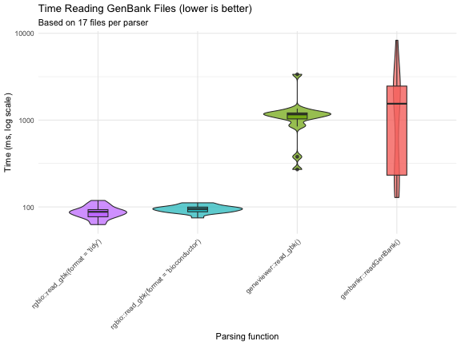

Benchmarking rgbio Performance
benchmarks.RmdBenchmarking rgbio Performance
Benchmark Setup
To evaluate real-world performance, we downloaded 17 archaeal type
strain assemblies from the order “Methanococcales” directly from NCBI
using the datasets command-line tool. These represent
real-world GenBank files with varying sizes and complexity.
#> The Benchmark was run on 2026-03-06 using rgbio version 0.2.0Data Download Command
# Download 17 archaeal type strain assemblies in GenBank format
datasets download genome taxon "methanococcales" \
--from-type \
--reference \
--assembly-source RefSeq \
--include gbff \
--filename methanococcales_type_strains.zip --dehydrated && \
unzip methanococcales_type_strains.zip && \
datasets rehydrate --directory .Packages Tested
We compared rgbio against three other popular GenBank
reading packages:
library(bench)
library(dplyr)
library(ggplot2)
# Packages being benchmarked
library(rgbio) # High-performance GenBank I/O using Rust gb-io crate
library(read.gb) # Specifically made for reading gb files
library(geneviewer) # Has a function to read gb files
library(genbankr) # Traditional Bioconductor GenBank reader. Only available up to Bioconductor version: 3.16 ≙ R version 4.2-
rgbio: Our Rust-powered package with two output
formats (
tidyandbioconductor) - geneviewer: A visualization-focused package with GenBank reading capabilities
- genbankr: The traditional Bioconductor solution for GenBank parsing
- read.gb: A dedicated GenBank file reader
Running the Benchmarks
# Set up test data paths
gbk_dir <- "./ncbi_dataset/data"
gbk_files <- list.files(gbk_dir, pattern = "\\.gbff$", recursive = TRUE, full.names = TRUE)
# Define reader functions for consistent testing
readers <- list(
"rgbio::read_gbk(format = 'tidy')" = function(file) {
tryCatch({
rgbio::read_gbk(file, format = "tidy")
}, error = function(e) {
message("rgbio (tidy) failed on ", file, ": ", e$message)
return(NULL)
})
},
"rgbio::read_gbk(format = 'bioconductor')" = function(file) {
tryCatch({
rgbio::read_gbk(file, format = "bioconductor")
}, error = function(e) {
message("rgbio (bioconductor) failed on ", file, ": ", e$message)
return(NULL)
})
},
"geneviewer::read_gbk()" = function(file) {
tryCatch({
geneviewer::read_gbk(file)
}, error = function(e) {
message("geneviewer failed on ", file, ": ", e$message)
return(NULL)
})
},
"genbankr::readGenBank()" = function(file) {
tryCatch({
genbankr::readGenBank(file)
}, error = function(e) {
message("genbankr failed on ", file, ": ", e$message)
return(NULL)
})
}
)We use the bench package to get accurate timing
measurements, testing each parser on every file exactly once to simulate
real-world usage patterns.
# Run comprehensive benchmarks across all file × reader combinations
benchmark_results <- press(
file = gbk_files,
reader = names(readers),
{
result <- bench::mark(
result = readers[[reader]](file),
iterations = 1,
check = FALSE
)
}
)Processing Results
# Clean up results and add useful metadata
benchmark_df <- benchmark_results %>%
mutate(
file_id = as.numeric(factor(file)),
file_name = dirname(file),
file_size_mb = file.info(file)$size / (1024^2),
success = !is.na(median),
time_ms = ifelse(success, as.numeric(median) * 1000, NA),
memory_mb = ifelse(success, as.numeric(gsub("[^0-9.]", "", mem_alloc)), NA)
) %>%
select(reader, file_id, file_name, file_size_mb, success, time_ms, memory_mb)Results
Performance Visualization
p1 <- ggplot(benchmark_df, aes(x = factor(reader, levels = names(readers)), y = time_ms, fill = reader)) +
geom_violin(alpha = 0.7) +
geom_boxplot(width = 0.2, alpha = 0.8) +
scale_y_log10() +
labs(
title = "Time Reading GenBank Files (lower is better)",
y = "Time (ms, log scale)",
subtitle = paste("Based on",
benchmark_df %>%
filter(success) %>%
group_by(reader) %>%
summarise(n = n()) %>%
pull(n) %>%
min(),
"files per parser")
) +
theme_minimal() +
theme(
axis.text.x = element_text(angle = 45, hjust = 1),
legend.position = "none"
) +
xlab("Parsing function")
p1
Summary Statistics
# Calculate performance summary with speedup factors
summary_stats <- benchmark_df %>%
group_by(reader) %>%
summarise(
n_files = n(),
median_time_ms = round(median(time_ms, na.rm = TRUE), 1),
mean_time_ms = round(mean(time_ms, na.rm = TRUE), 1),
median_memory_mb = round(median(memory_mb, na.rm = TRUE), 1),
.groups = "drop"
) %>%
arrange(factor(reader, levels = names(readers))) %>%
mutate(
max_time = max(median_time_ms),
speedup = case_when(
median_time_ms == max_time ~ "baseline",
TRUE ~ paste0(round(max_time / median_time_ms, 1), "x")
)
) %>%
select(reader, speedup, median_time_ms, mean_time_ms, median_memory_mb, n_files)
knitr::kable(summary_stats,
col.names = c("Parser", "Speed vs Slowest", "Median Time (ms)",
"Mean Time (ms)", "Median Memory (MB)", "Files Tested"),
caption = "Performance comparison summary")| Parser | Speed vs Slowest | Median Time (ms) | Mean Time (ms) | Median Memory (MB) | Files Tested |
|---|---|---|---|---|---|
| rgbio::read_gbk(format = ‘tidy’) | 17.6x | 87.8 | 87.6 | 31.2 | 17 |
| rgbio::read_gbk(format = ‘bioconductor’) | 16.3x | 94.6 | 94.9 | 29.3 | 17 |
| geneviewer::read_gbk() | 1.3x | 1162.6 | 1166.3 | 1.5 | 17 |
| genbankr::readGenBank() | baseline | 1545.1 | 1774.0 | 34.8 | 17 |
Key Findings
The benchmarks reveal several important insights:
-
rgbio is significantly faster: Both
rgbioformats substantially outperform traditional R-based parsers -
Consistent performance:
rgbioshows reliable performance across different file sizes and complexities
-
Format flexibility: The
tidyformat offers the best performance, whilebioconductorformat provides compatibility with existing workflows -
Memory efficiency:
rgbiomaintains competitive memory usage while delivering superior speed
Technical Details
sessionInfo()
#> R version 4.2.3 (2023-03-15)
#> Platform: aarch64-apple-darwin20 (64-bit)
#> Running under: macOS 15.7.4
#>
#> Matrix products: default
#> LAPACK: /Library/Frameworks/R.framework/Versions/4.2-arm64/Resources/lib/libRlapack.dylib
#>
#> locale:
#> [1] en_US.UTF-8/en_US.UTF-8/en_US.UTF-8/C/en_US.UTF-8/en_US.UTF-8
#>
#> attached base packages:
#> [1] stats graphics grDevices utils datasets methods base
#>
#> other attached packages:
#> [1] genbankr_1.26.0 geneviewer_0.1.11 read.gb_2.2 rgbio_0.2.0 ggplot2_4.0.2
#> [6] dplyr_1.2.0 bench_1.1.4
#>
#> loaded via a namespace (and not attached):
#> [1] MatrixGenerics_1.10.0 Biobase_2.58.0 httr_1.4.8
#> [4] tidyr_1.3.1 bit64_4.0.5 jsonlite_2.0.0
#> [7] S7_0.2.1 stats4_4.2.3 BiocFileCache_2.6.1
#> [10] blob_1.3.0 profmem_0.7.0 BSgenome_1.66.3
#> [13] Rsamtools_2.14.0 GenomeInfoDbData_1.2.9 yaml_2.3.12
#> [16] progress_1.2.3 lattice_0.20-45 pillar_1.11.1
#> [19] RSQLite_2.3.7 glue_1.8.0 digest_0.6.39
#> [22] GenomicRanges_1.50.2 RColorBrewer_1.1-3 XVector_0.38.0
#> [25] Matrix_1.5-3 htmltools_0.5.9 XML_3.99-0.22
#> [28] pkgconfig_2.0.3 biomaRt_2.54.1 zlibbioc_1.44.0
#> [31] purrr_1.0.2 scales_1.4.0 fontawesome_0.5.3
#> [34] BiocParallel_1.32.6 tibble_3.3.1 KEGGREST_1.38.0
#> [37] generics_0.1.4 farver_2.1.2 IRanges_2.32.0
#> [40] SummarizedExperiment_1.28.0 cachem_1.1.0 withr_3.0.2
#> [43] GenomicFeatures_1.50.4 BiocGenerics_0.44.0 cli_3.6.5
#> [46] magrittr_2.0.4 crayon_1.5.3 memoise_2.0.1
#> [49] evaluate_1.0.5 xml2_1.3.6 tools_4.2.3
#> [52] prettyunits_1.2.0 hms_1.1.4 matrixStats_1.3.0
#> [55] BiocIO_1.8.0 lifecycle_1.0.5 stringr_1.6.0
#> [58] S4Vectors_0.36.2 DelayedArray_0.24.0 AnnotationDbi_1.60.2
#> [61] Biostrings_2.66.0 compiler_4.2.3 GenomeInfoDb_1.34.9
#> [64] rlang_1.1.7 grid_4.2.3 RCurl_1.98-1.14
#> [67] rstudioapi_0.18.0 VariantAnnotation_1.44.1 rjson_0.2.21
#> [70] rappdirs_0.3.4 htmlwidgets_1.6.4 bitops_1.0-7
#> [73] codetools_0.2-19 restfulr_0.0.15 gtable_0.3.6
#> [76] rentrez_1.2.4 DBI_1.3.0 curl_7.0.0
#> [79] R6_2.6.1 GenomicAlignments_1.34.1 knitr_1.51
#> [82] rtracklayer_1.58.0 utf8_1.2.6 fastmap_1.2.0
#> [85] bit_4.0.5 filelock_1.0.3 stringi_1.8.4
#> [88] parallel_4.2.3 vctrs_0.7.1 png_0.1-8
#> [91] dbplyr_2.5.2 tidyselect_1.2.1 xfun_0.56Conclusion
These benchmarks demonstrate that rgbio provides
substantial performance improvements for GenBank file parsing in R,
making it an excellent choice for both interactive analysis and
large-scale genomic data processing workflows. The Rust-powered backend
delivers the speed improvements while maintaining the familiar R
interface that researchers expect.
For the most up-to-date benchmarks and methodology, visit the rgbio GitHub repository.